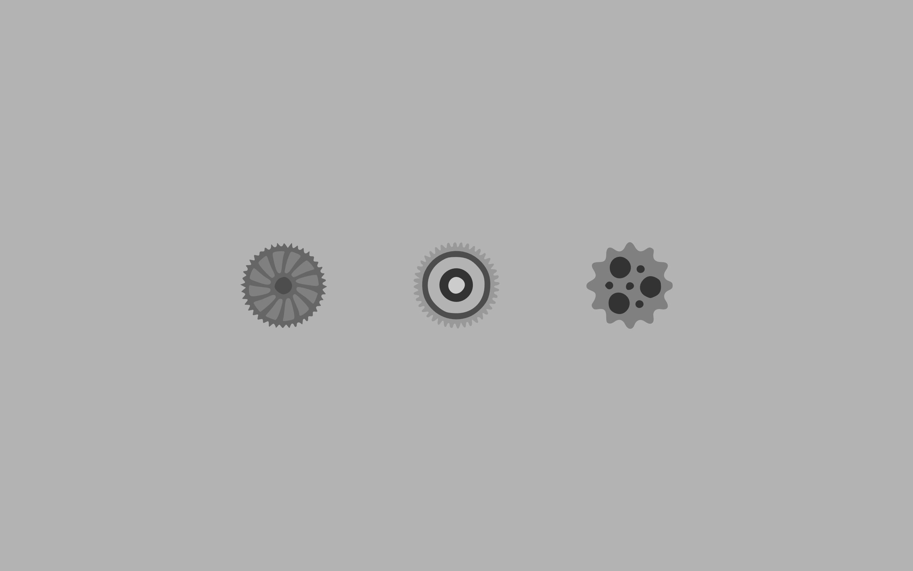
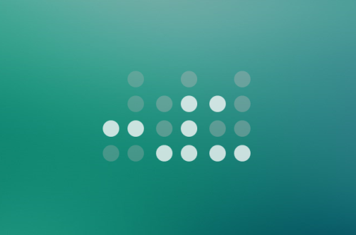

Time Length

In order to get the most time-efficient performance in our work hours, the time lenght our team agreed to perform this task is 2 months, starting from september 20th and ending on November 23rd. The time will be used to add functionality, design and aesthetic improvements over time, along with the base features described on the previous document and the additional features described above.
Tests, interviews and iterative process of improvement will be done in the second stage of the project in order to make sure that the features added are useful for the that would be using the product, therefore, creating a much better user experience and demonstrating the reliability of our products.
Features and Specifications
In our company, we describe ourselves and our job as: "in constant improvement". We believe in making things and ourselves better each day. It is important for us and for the sake of our projects to be released after a complete cycle of testing and improvement to provide the best user experience possible through multiple features. In this specific project, we have already defined a solid and specific list of features that will prove themselves to be highly effiicient assets:
- Responsive Interface for a much faster and time-efficient experience.
- Aesthetic, user friendly and current trends oriented design.
- Easy to find information through the quick links portal.
- Search Toolbar
- 2 months of support and maintenance included in cost.
More about us
Over the course of our carrers we have developed some other products in which we have put all of our effort in bringing them to life. Some of this works are compiled below for you to know that your expectations will be met.
Development Cost
The job done over this 2 months time period, resources and equipment used come at a cost of _____.
Any appraisal or second opinion performed by a technician of the client's choice are welcomed and recommended for the sake of our clients conformity with the result of our work.